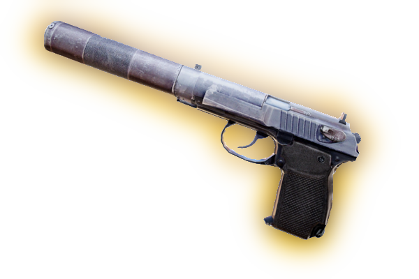
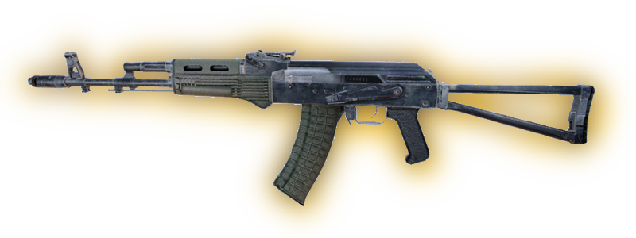

Оружие
ПМм
Наиболее распространённый в Зоне пистолет — наследие советской эпохи. Достаточно надёжен и дешёв, но отличается невысокой ёмкостью магазина при недостаточной мощности и неудовлетворительной кучности патрона. Основное оружие сталкера-новичка.
ПБ-1с
Пистолет с интегрированным глушителем, некогда использовавшийся советским спецназом. Морально устарел, но в умелых руках по-прежнему довольно эффективен.
Фора-12
Пистолет украинского производства, предназначенный в основном для вооружения правоохранительных органов и силовых структур. Обладает лучшими по сравнению с ПМм точностью боя, приёмистостью и ёмкостью магазина. В основном попадает в Зону среди широко реализуемой здесь отбраковки (в основном это ранние образцы со всеми «детскими болезнями»). Тем не менее, пользуется спросом у сталкеров из-за достаточно высоких боевых характеристик.
ХПСС-1м
Это оружие заслуженно считается одним из лучших пистолетов XX века. Надёжный, мощный, с хорошей кучностью стрельбы. Ёмкость магазина — 13 патронов.
Марта
Пистолеты этой серии имеют во всём мире репутацию надёжного, хотя и несколько громоздкого оружия, и состоят на вооружении армейских и полицейских формирований многих стран. Не менее популярны и у преступников благодаря мощному патрону и ёмкому магазину. Как правило, в Зону попадают не самые новые модели.
Волкер-П9м
Отличный пистолет западного производства, отличающийся высокой надёжностью, ёмким магазином, хорошей точностью боя и, пожалуй, лучшей в своем классе эргономикой. Попав в Зону, стал одним из самых распространённых пистолетов как среди профессионалов, так и среди новичков при деньгах.
Кора-919
Классический автоматический «Кольт», с честью прошедший все вооружённые конфликты XX века и уверенно вошедший в новое столетие. Невысокая ёмкость магазина в определённой степени компенсируется использованием мощного патрона.
СИП-т М200
Единственная оставшаяся в серийном производстве модель популярного во всём мире пистолета. Данное оружие характерно прекрасной эргономикой и отличной точностью боя. Малая ёмкость магазина компенсируется мощным патроном и надёжностью швейцарских часов. Неудивительно, что пистолет пользуется неизменным спросом у бывалых сталкеров и наёмников.
УДП «Компакт»
Солидный ствол. Немецкое качество и надёжность. Компактное оружие ближнего боя. Пользуется особой популярностью среди ветеранов Зоны.
Чёрный ястреб
Настоящая пушка для настоящих героев. Большая, тяжёлая и чрезвычайно убойная. Из-за цены и габаритов особой популярностью в Зоне не пользуется, всё-таки не каждый день охотишься на слона.
Обрез
Обрез охотничьего ружья с горизонтальным расположением стволов. Значительно компактней и легче двустволки, но эффективен только в ближнем бою. Один из самых распространённых видов оружия у новичков.
Охотничье ружьё
Широко распространённое охотничье ружьё-«вертикалка» — благодаря достаточной точности и хорошему останавливающему действию — обеспечивает более надёжную защиту от мутантов, чем пистолет. Очень дёшево и доступно в сравнении с большинством видов оружия, поэтому активно применяется новичками и бандитами как на окраинах, так и в Центре Зоны.
Чейзер-13
Помповый гладкоствольный дробовик западного производства, который пользуется широкой популярностью благодаря надёжности и высокой скорости перезарядки. Все детали данного оружия снабжены антикоррозионным покрытием.
СПСА-14
Гладкоствольное самозарядное ружьё, разработанное в конце 1970-х в качестве универсального боевого оружия для полиции и штурмовых подразделений армии. Отличается высокой надёжностью и гибкостью применения; пожалуй, лучшего ствола для ближнего боя в Зоне не найти. С другой стороны, масса этого оружия довольно велика, устройство сложно, а цена высока.
Отбойник
Гладкоствольный боевой дробовик, разработанный для повышения огневой мощи спецподразделений армии и полиции. Основные достоинства — высокая ёмкость магазина и практичная скорострельность; основные недостатки — внушительные габариты и масса оружия, а также невысокая скорость перезарядки. В Зоне встречается редко и применяется в основном для зачистки логов мутантов.
Гадюка-5
Данный пистолет-пулемёт заслуженно пользуется огромной популярностью благодаря надёжности, удобству в обращении и высокой точности стрельбы. Принятый на вооружение армейских и полицейских подразделений многих стран, он появился и на чёрном рынке и со временем добрался до Зоны.
АКМ-74/2У

По своим габаритам и массе близок к пистолетам-пулемётам, однако устройство механизма почти полностью идентично АКМ-74/2. Малые габариты оружия позволяют успешно использовать его в условиях городской застройки и в стесненных условиях, а пробивающее действие пули довольно велико. Среди недостатков — малая прицельная дальность и склонность к быстрому перегреву.
АКМ-74/2
Автомат образца 1974 года, с появлением которого армии стран Варшавского договора начали переходить на малокалиберный и малоимпульсный патрон. Массивный компенсатор позволяет ещё более снизить и так не слишком значительную отдачу, что положительно сказывается на точности и кучности боя во всех режимах ведения огня. Кроме того, это простое в устройстве и надёжное оружие.
АС-96/2
Современный автомат, разработанный на замену устаревающему АКМ-74/2. Одна из главных особенностей — возможность ведения огня очередями по 2 выстрела с высокой точностью, так что на расстоянии ста метров обе пули ложатся в одну точку. Это существенно увеличивает шансы поразить цель благодаря совокупному останавливающему и пробивающему действию пуль.
Гром-С14
Автоматно-гранатомётный комплекс, на 70% унифицированный с автоматами типа АКМ-74 (основные отличия — калибр 9 × 39 мм, компоновочная схема «булл-пап» и более широкие возможности для модернизации). Разработан для вооружения подразделений быстрого реагирования. Очень ценим военными и сталкерами за способность надёжно поражать защищённого бронежилетом или расположенного в укрытии противника.
СА «ЛАВИНА»

Это оружие было создано на основе специальной снайперской винтовки «Винтарь-ВС» в качестве бесшумного оружия для войск специального назначения. Оно позволяет стрелку вести эффективный огонь по защищённому бронежилетом противнику, при этом не демаскируя своей позиции. Одна из главных особенностей — использование интегрированного глушителя и патронов калибра 9 × 39 мм с тяжёлой пулей.
ИЛ86
Обнаруженные при эксплуатации недостатки данной винтовки привели к тому, что большая часть оружия была модернизирована, а списанные партии через чёрный рынок попали в Зону. Главными достоинствами являются штатный четырёхкратный оптический прицел, высокая точность одиночного выстрела и высокий потенциал модернизации. При стрельбе очередями точность боя резко падает, а автоматика демонстрирует склонность к задержкам.
ТРс-301

Лёгкая винтовка с дальностью эффективного огня до 300 метров. Благодаря исключительно ровному спуску, высокой эргономике и небольшому весу данное оружие отличается высокой точностью боя, хотя высокая чувствительность к загрязнению делает её не всегда пригодной для использования в сложных полевых условиях.
СГИ-5к
Представитель относительно нового семейства штурмовых винтовок. Благодаря высокой надёжности, точности в бою и удобству в обращении, является одним из лучших образцов вооружения этого класса. В Зоне встречается нечасто и стоит немалых денег; обычно её специально заказывают для себя бывалые сталкеры.
ГП37
Штурмовая винтовка немецкого производства, представляющая собой первоклассный образец современного оружия — лёгкого, надёжного и эргономичного.
ФТ-200М
Это футуристическое на вид оружие — серийно производимый автоматно-гранатомётный комплекс модульной конструкции. Оснащён 40-мм гранатомётом и компьютеризованным прицелом-модулем управления огнём. Несмотря на внешнюю громоздкость, отличается высокой эргономичностью, удобством ведения огня во всех режимах и высокой надёжностью.
РП-74
Ручная модификация армейского пулемёта с ленточным питанием. Несмотря на высокую массу и неудовлетворительную точность боя, нашёл себе достаточно широкое применение в Зоне. В основном используется для подавления превосходящего по численности противника и при зачистках логов мутантов.
Винтарь-ВС
«Винтовка снайперская специальная», предназначена для бесшумной и беспламенной снайперской стрельбы, для чего снабжена интегрированным глушителем. Несмотря на магазин небольшой ёмкости, очень ценится сталкерами. Для снаряжения используются боеприпасы калибра 9 × 39 мм.
СВУмк-2
Более современный вариант снайперской винтовки СВДм-2, в котором для уменьшения габаритов использована компоновка «булл-пап». Обладает более высоким по сравнению с «родительницей» боевым темпом стрельбы при меньшей массе, причём точность боя на малой и средней дальностях осталась примерно той же. Сегодня пользуется вполне заслуженной популярностью в войсках и среди сталкеров.
СВДм-2
Широко использовалась во всех боевых операциях, проводившихся советской армией с начала 1960-х. Зарекомендовала себя как исключительно надёжное и удобное в обращении оружие.
Гаусс-пушка
Сверхточное оружие, которое собрали конструкторы в Зоне. Работает почти бесшумно, поскольку для стрельбы используется энергия артефактов, а не пороховых газов. Несмотря на колоссальную мощность выстрела, отдача у Гаусс-пушки очень невелика. По точности и убойной силе превосходит любое классическое стрелковое оружие.
Бульдог-6
Гранатомёт револьверного типа. Иногда просто незаменим, в частности при очистке больших площадей от мутантов, нападении на охраняемые стационарные объекты, в бою с особо живучими тварями.
РПГ-7у
Гранатомёт образца 1960-х, в огромном количестве оставшийся на армейских складах, откуда и попал в Зону. Редкое для сталкеров оружие: внушительные габариты и большой вес делают РПГ не слишком популярным, хотя иногда он просто незаменим.